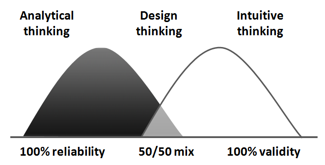
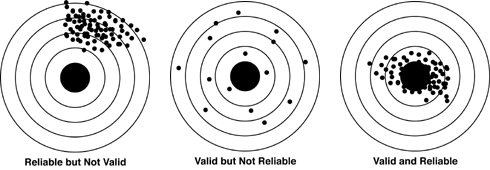
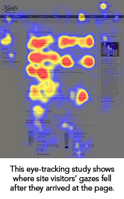
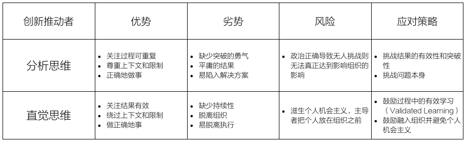

去年一场设计思维的工作坊，我讲到了分析思维和直觉思维的区别，当时我展示了一幅图，图的左边是分析思维（Analytical Thinking）：即期待重复发生的事件中、用重复的方式找到共同之处；而右边是直觉思维（Intuitive Thinking）：即期待突然降临的灵感突然奏效。

讲演中我说：分析思维更加重视可验证性，而直觉思维更加依赖于某个可以信赖的人，此图有些错误，右边应该是Reliability，左侧才是Validity。
直到今年，经过朋友的指点，我才意识到，我对于Reliability和Validity的理解是错误的。以下是我对Reliability和Validity的重新理解，并做了相关的延伸阅读，是以为记。
可信赖的过程和有效的结果
首先，Reliability偏重过程可以重复可信赖（Reliable），而不在于结果有效（Valid）。 下图完美地解释了可信赖的过程（Reliable Process）和有效的结果（Valid Result）之间的区别：

可信赖的过程扼杀有效的结果
其次，重复可信赖的过程需要分析思维的帮助，通过分析结果反推过程，寻找可以固化的模式，并反复使用，最终获得持续的结果。但结果本身往往是无法验证有效的，因为「有效的结果」存在上下文（即不同的靶心）。
例如，网页设计中的「F模式」被广泛应用于网页设计，模式本身基于大量人眼跟踪测试结果，这个设计可以称之为「可信赖的」。

但是不少设计师开始反思这种以「最佳实践驱动的设计」本身是不是在犯着「自说自话」的错误，在一篇反思互联网是否在扼杀设计师创造力的文章《Is The Internet Killing Creativity?》中作者这样评价「F模式」：
What comes first, the F reading pattern, or the F design pattern? I think people read our sites like they do because we design them that way. （到底是现有F阅读模式、还是现有F设计模式？我想只是因为我们这么设计、人们才这样阅读。）
换言之，到底什么是「更加有效的结果」的讨论，往往被扼杀在「看起来可信赖的过程」中。
先追求过程还是先追求结果
当我们把这个问题引入到企业创新这个话题上，这将是所有企业创新者所遇到的问题：
- 追求过程往往限制创新，获得平庸的结果；
- 追求结果往往无法持续，再漂亮的结果也是昙花一现，对组织无益。
不同特点领导者的关注点可能不同：
- 我不管你实现的结果，我只关注可以落地的实践；
- 我不管你实现的过程或是否能够复制，我只关注成功的结果。
而在组织里，你也会遇到两类执行者：
- 我首先想到的是使用流程和最佳实践，保证有结果，而不是最好的结果；
- 我首先想到的是最好的结果，同时绕过流程和最佳实践。
从设计思维中，我们可以给出很好的答案。
过度追求过程的可依赖性最后的结果只是「刻舟求剑」——当靶心早已变化；一味追求结果的有效，却不尊重上下文和持续性，最后的结果则毫无意义（Unreliable validity is not validity）。而将各自所代表的「分析思维」与「直觉思维」相互整合才是设计思维的核心。
回到最初的问题，作为主导企业创新决策者的你，先追求过程还是追求结果？
我的回答的是，取决你有什么样的推动者。
当你有一个「分析思维」的推动者，他的特点是认真、稳重，你要做的是「挑战他的结果」——这是正确的结果吗？还有更好的结果吗？你评价结果的标准正确吗？这帮助他突破因为「过程导向」所导致的「结果蒙蔽」。
当你有一个「直觉思维」的推动者，他充满热情、无所畏惧，你要做的是「挑战他的过程」——我们从结果中学到了什么？为什么成功？为什么失败？做什么可以帮助我们第二次成功？阻止我们第二次失败？这避免使他成为「幼稚的机会主义者」。

我始终的观点是，就算对设计思维理解极深刻的人，都不可能保证完美成为50/50的Design Thinker，他最多只能对另外一边保持「认识（Aware）」，而由不同人组成的组织可以，优秀的企业领导者，应该识别出组织内创新的推动者偏向哪一边，同时考虑组织当前更需要哪一边，给予他不同策略（追求结果或追求过程）的支持。
写在最后
如果一定让我避免咨询师般「It depends」式模棱两可的回答，我想说：
关于过程可依赖性与结果有效的讨论其实大量出现在企业活动中，有趣的是，结果有效时你所收到「如何才能可持续」的挑战，要远远多于当过程已经持续时，你收到「真的在解决真正问题吗」的质疑，原因很简单：
手上有弓，到处都是靶。
因此，到底是Reliability还是Validity的问题，看看在你的组织里，到底哪种挑战更多，如果没有人挑战「真的在解决真正问题吗（is it valid）？」那么放弃一些过程的可信赖，也是可以的。
别忘记了，Reliability解决的是你有把不错的弓箭，Validity解决的是让你射在正确的靶子上。
最后感谢给我建议的朋友。